Aufgabe 1: Mittelwertfilter (Tiefpass)
1A
Mittelwertfilter und dessen Wirkung
Erweitere bmp_io so, dass ein Filter mit einem Kernel von 3x3 Pixeln angewandt werden kann.
Beim Mittelwertfilter wird ein Zielpixel aus dem Mittelwert aller Pixel im Kernel im Originalbild
berechnet. Beschreibe die Wirkung des Filters auf deine Bilder!
Code für den Mittelwertfilter:
// filter
for(int y = 1; y < bmp.image.getHeight()-1; y++) {
for(int x = 1;x < bmp.image.getWidth()-1; x++) {
// Mittelwertfilter
int added = 0;
for(int i = -1; i<2; i++){
for(int j = -1; j<2; j++){
added += bmp.image.getRgbPixel(x+ i, y+j).r;
}
}
added /= 9;
bmp_f.image.setRgbPixel(x,y,new PixelColor(added, added, added));
}
}
Bild manmade mit Filter:
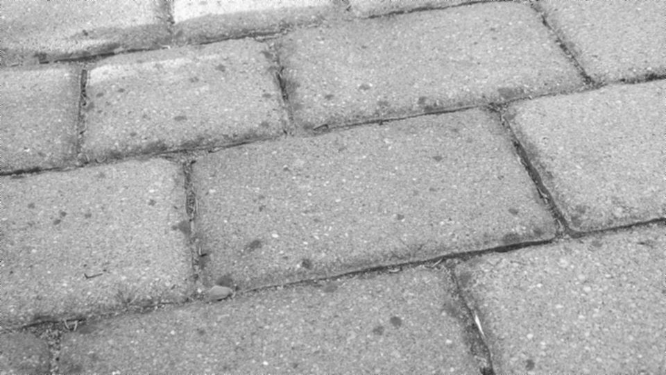
Bild nature mit Filter:
Änderungen sind vor allem in der Form sichtbar, dass die Bilder unschärfer werden.
1B
Berechnung Filter mit Randpixeln
Wie verfährt man bei der Berechnung des Filters mit den Randpixeln?
In der vorgegebenen bmp_io_ue6 wird in der for-Schleife der äußerste 1-Pixel-Rand ignoriert, indem bei 1 angefangen und bei z.B. width-1 aufgehört wird. Dadurch entstehen keine out ouf bounds Fehler, der äußerste Rand wird dadurch allerdings nicht gefiltert.
1C
Differenzbild
Erweitere bmp_io so, dass das Differenzbild zwischen dem gefilterten und dem Originalbild
berechnet werden kann (analog zu Übung 2, Aufgabenpunkt 3.3)! Dieses muss offensichtlich die
Information zeigen, die das Filter entfernt hat. Beachte dabei, dass du das Differenzbild
möglicherweise im Kontrast verstärken musst (siehe Übung 4).
Code für das Differenzbild:
// differenzbild
for(int y = 0; y < bmp.image.getHeight(); y++) {
for(int x = 0; x < bmp.image.getWidth(); x++) {
int pixelDiff = (bmp.image.getRgbPixel(x,y).r - bmp_f.image.getRgbPixel(x,y).r) / 2 + 127;
bmp_diff.image.setRgbPixel(x,y,new PixelColor(pixelDiff, pixelDiff, pixelDiff));
}
}
In unserem Fall haben wir auf einen verstärkten Kontrast verzichtet, da die Differenzen klar aus unseren Bilder erkennbar ablesbar sind.
Bild manmade Differenz zu Orgiginalbild:

Bild nature Differenzbild zu Originalbild:
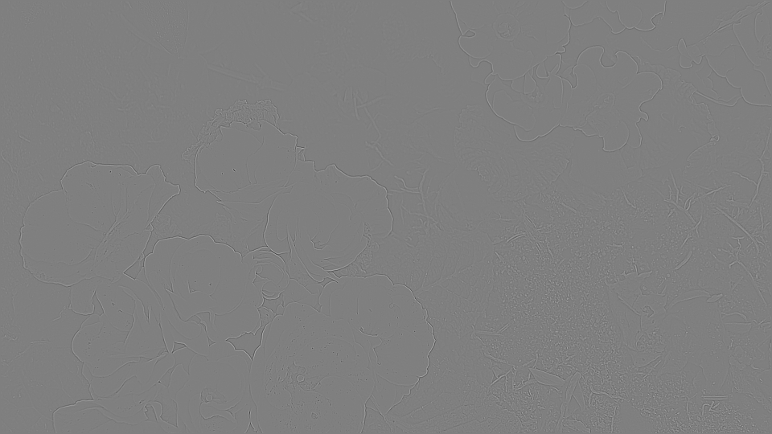
Aufgabe 2: Gradientenfilter
2A
3*3 Kernel auf Bilder anwenden
Wende nun den folgenden 3*3 Kernel auf deine Bilder an! Beachte dabei, dass bei der direkten
Anwendung der Vorschrift Werte > 255 entstehen können. Durch welchen Wert muss also die
Intensität des Zielpixels geteilt werden, damit man wieder in den erlaubten Bereich 0…255 kommt?
Beschreibe die Wirkung des Filters auf deine Bilder!
Code für den Gradientenfilter:
// filter
for(int y = 1; y < bmp.image.getHeight()-1; y++) {
for(int x = 1;x < bmp.image.getWidth()-1; x++) {
// Mittelwertfilter
int added = 0;
// Gradientenfilter
added += bmp.image.getRgbPixel(x, y-1).r * -2;
added += bmp.image.getRgbPixel(x+1, y).r + -2;
added += bmp.image.getRgbPixel(x-1, y).r * -2;
added += bmp.image.getRgbPixel(x, y+1).r * -2;
added += bmp.image.getRgbPixel(x, y).r * 12;
added /= 20;
bmp_f.image.setRgbPixel(x, y, new PixelColor(added, added, added));
}
}
Bild manmade mit Gradientenfilter:
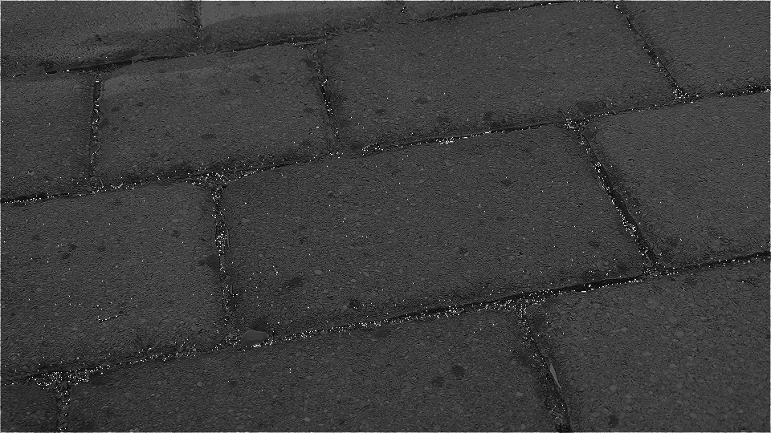
Bild nature mit Gradientenfilter:
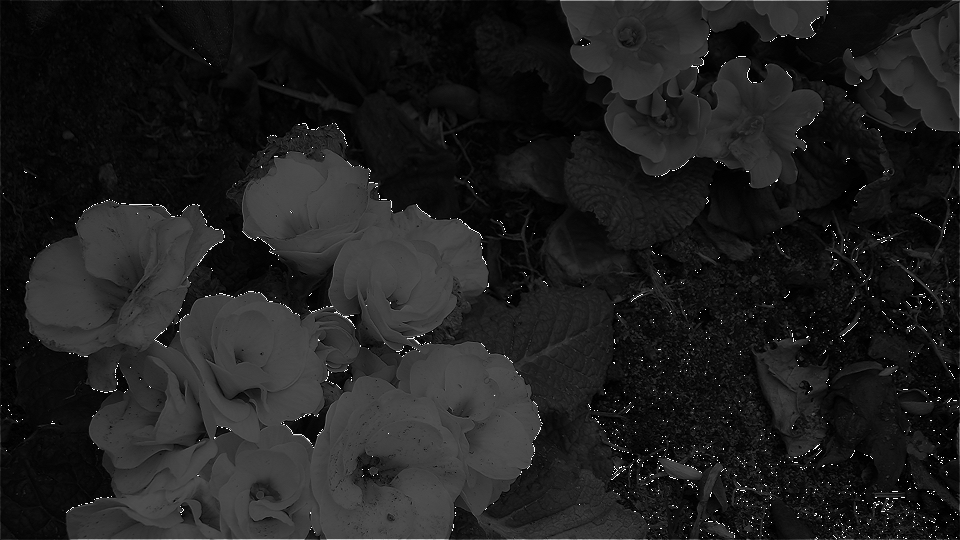
2B
Differenzbild zwischen dem gefilterten und dem Originalbild
Berechne wiederum das Differenzbild zwischen dem gefilterten und dem Originalbild! Beachte
dabei ebenfalls, dass du das Differenzbild möglicherweise im Kontrast verstärken musst.
Differenzbild manmade für den Gradientenfilter:
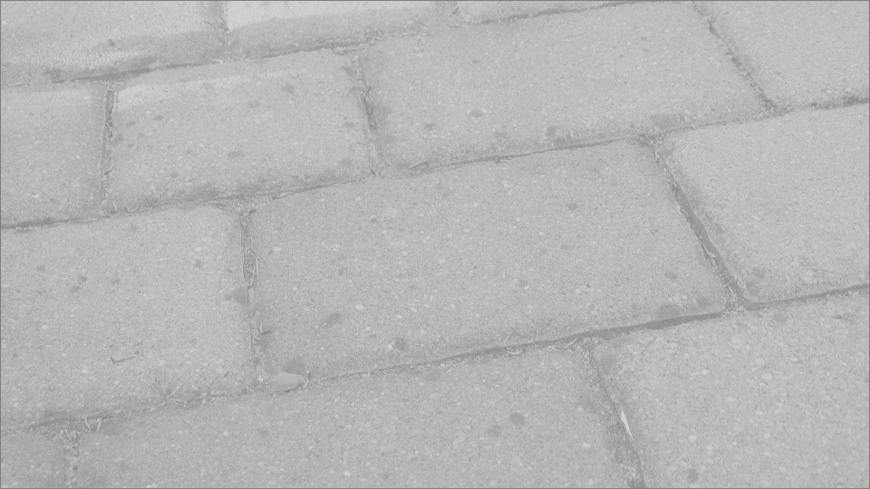
Differenzbild nature für den Gradientenfilter:
Aufgabe 3: Medianfilter
Medianfilter für 3x3-Pixelmatrix
Das Medianfilter reiht alle Pixelintensitäten im Filterkernel der Größe nach auf und gibt den
Intensitätswert aus, der an der mittleren Position steht. Es wird oft zur Beseitigung von Kratzern oder
punktförmigen Bildfehlern verwendet. Füge zunächst mit Paint deinem Flächenbild zehn „Fehler“
hinzu, wie es in dem folgenden Beispiel zu sehen ist. Benutze dazu einen weißen Stift mit der
Strichstärke 2 Pixel. Programmiere das Medianfilter für deine 3x3-Pixelmatrix und berechne das
Ergebnisbild.
Code für den Medianfilter:
for(int y = 1; y < bmp.image.getHeight()-1; y++) {
for(int x = 1;x < bmp.image.getWidth()-1; x++) {
// Medianfilter
int added[] = new int[9];
int ii = 0;
for(int i = -1; i>2; i++){
for(int j = -1; j<2; j++){
added[ii] = bmp.image.getRgbPixel(x+ i, y+j).r;
ii++;
}
}
Arrays.sort(added);
bmp_f.image.setRgbPixel(x,y,new PixelColor(added[4], added[4], added[4]));
}
}
manmade
Bild manmade Fehler eingebaut:
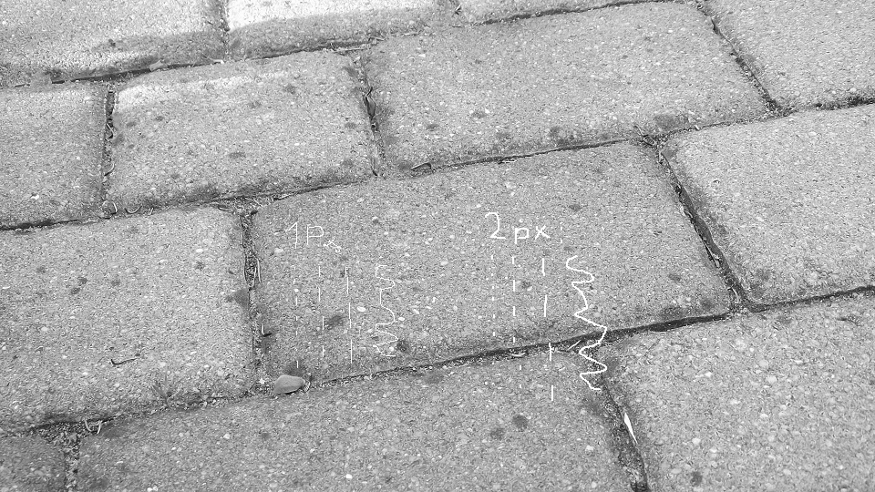
Bild manmade mit Medianfilter:
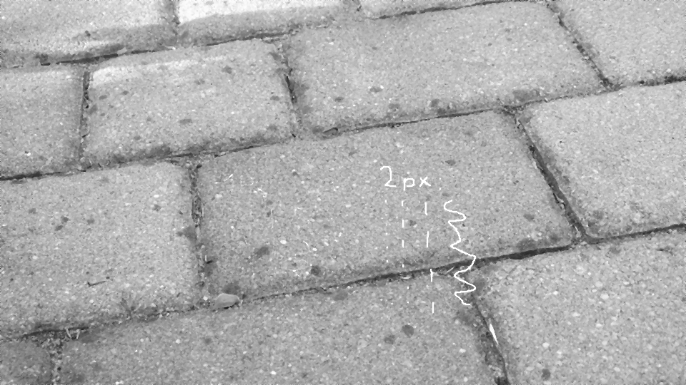
Differenz manmade mit Medianfilter:
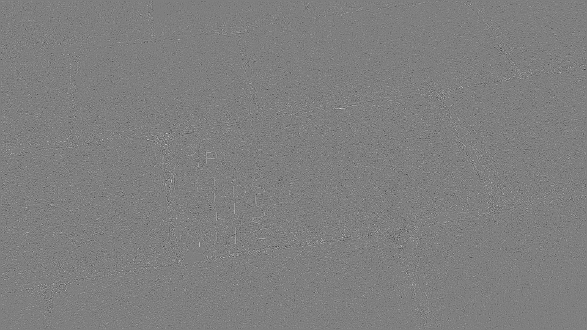
nature
Bild nature Fehler eingebaut:
Bild nature mit Medianfilter:
Differenz nature mit Medianfilter:
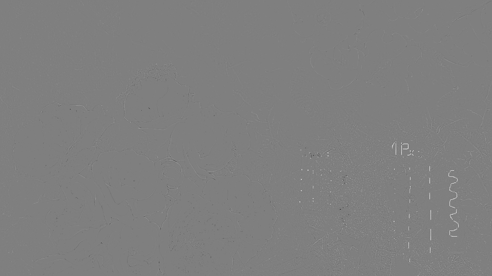
Aufgabe 4: Sobel-Filter
Programmiere einen Sobel-Filter
Das Sobel-Filter dient der Detektion von Kanten im Bild. Programmiere ein Sobel-Filter für die x- und
ein Sobel-Filter für die y-Richtung und wende sie auf deine Bilder an! Die Matrizen für das SobelFilter finden sich im pdf zur Bildfilterung.
Code für den Sobel-Filter:
for(int y = 1; y < bmp.image.getHeight()-1; y++) {
for(int x = 1;x < bmp.image.getWidth()-1; x++) {
double[][] S_x = new double[][]{new double[]{-1,0,1}, new double[]{-2,0,2}, new double[]{-1,0,1}};
double[][] S_y = new double[][]{new double[]{-1,-2,-1}, new double[]{0,0,0}, new double[]{1,2,1}};
double G_x = (S_x[0][0] * bmp.image.getRgbPixel(x-1,y-1).r) + (S_x[0][1] * bmp.image.getRgbPixel(x,y-1).r) + (S_x[0][2] * bmp.image.getRgbPixel(x+1,y-1).r) +
(S_x[1][0] * bmp.image.getRgbPixel(x-1,y).r) + (S_x[1][1] * bmp.image.getRgbPixel(x,y).r) + (S_x[1][2] * bmp.image.getRgbPixel(x+1,y).r) +
(S_x[2][0] * bmp.image.getRgbPixel(x-1,y+1).r) + (S_x[2][1] * bmp.image.getRgbPixel(x,y+1).r) + (S_x[2][2] * bmp.image.getRgbPixel(x+1,y+1).r);
double G_y = (S_y[0][0] * bmp.image.getRgbPixel(x-1,y-1).r) + (S_y[0][1] * bmp.image.getRgbPixel(x,y-1).r) + (S_y[0][2] * bmp.image.getRgbPixel(x+1,y-1).r) +
(S_y[1][0] * bmp.image.getRgbPixel(x-1,y).r) + (S_y[1][1] * bmp.image.getRgbPixel(x,y).r) + (S_y[1][2] * bmp.image.getRgbPixel(x+1,y).r) +
(S_y[2][0] * bmp.image.getRgbPixel(x-1,y+1).r) + (S_y[2][1] * bmp.image.getRgbPixel(x,y+1).r) + (S_y[2][2] * bmp.image.getRgbPixel(x+1,y+1).r);
int G = (int) Math.sqrt((G_x * G_x) + (G_y * G_y));
bmp_f.image.setRgbPixel(x,y,new PixelColor(G, G , G));
}
}
manmade
Bild manmade mit Sobel-Filter:
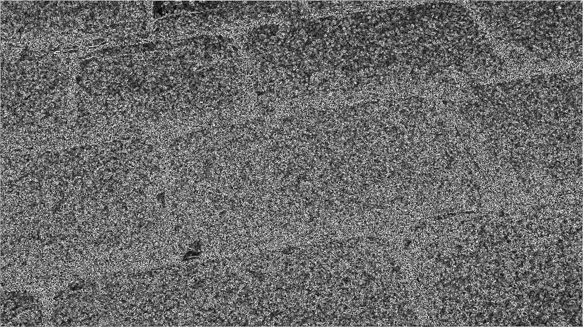
Differenz manmade mit Sobel-Filter:
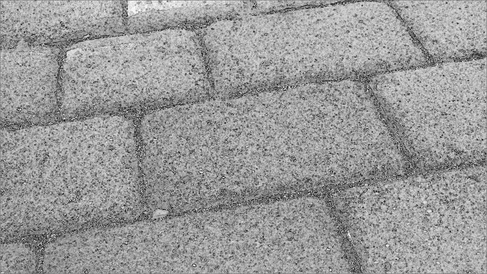
nature
Bild nature mit Sobel-Filter:
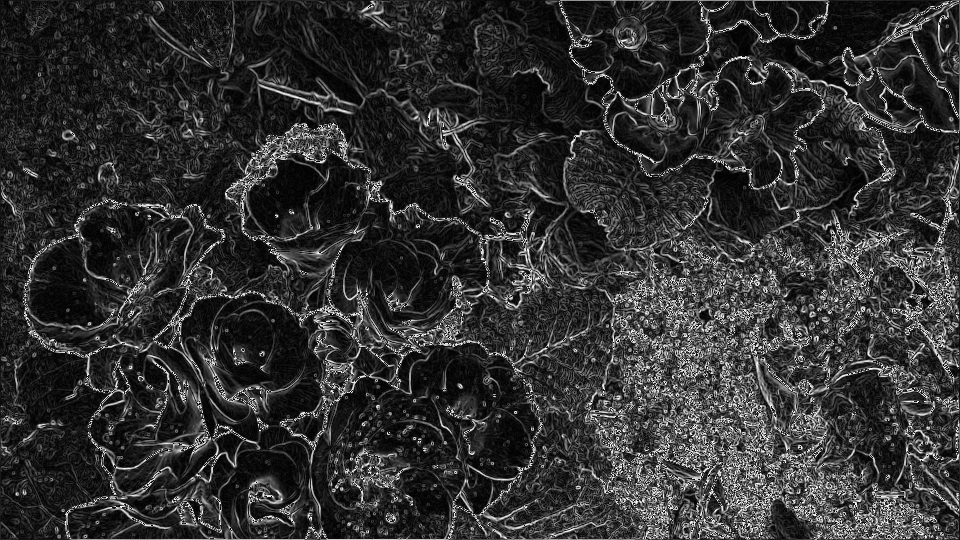
Differenz nature mit Sobel-Filter:
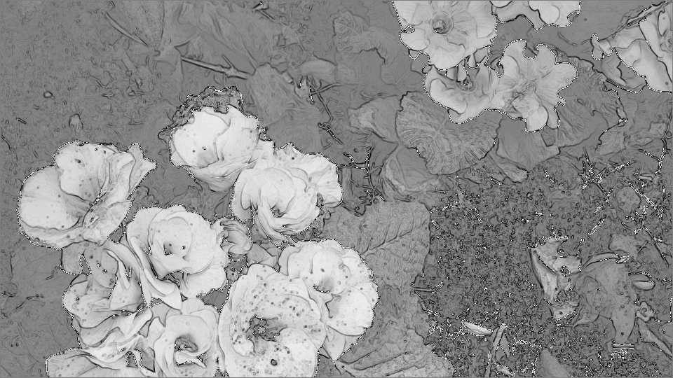